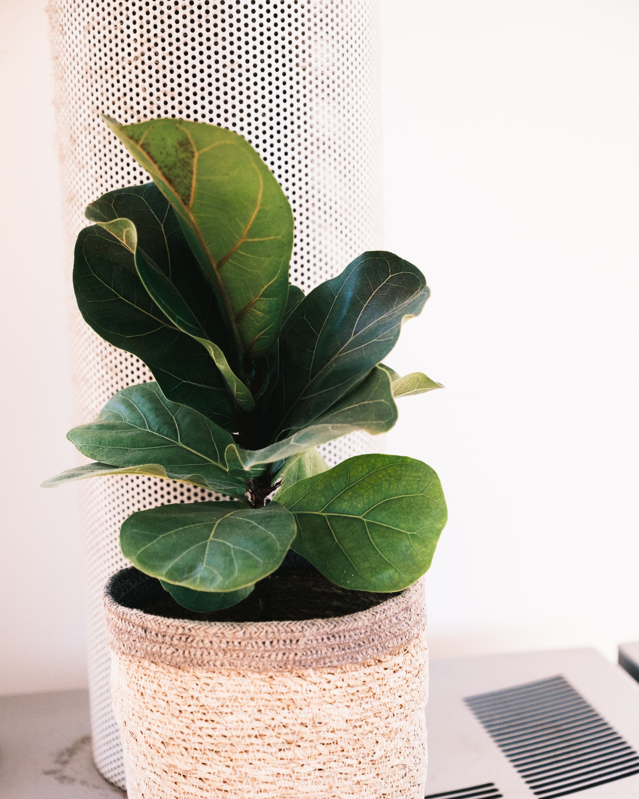

Fiddle Leaf Fig
Ficus lyrata
Fiddle Leaf Fig is a popular houseplant with large, violin-shaped leaves. It can grow into a tall indoor tree and needs consistent care.
Bright indirect light
Every 1–2 weeks
40–60%
18–30°C
Care instructions
Light
Fiddle Leaf Fig grows best in bright indirect light. Avoid sudden changes in lighting.
Water
Water when the top few centimeters of soil become dry. Avoid keeping the soil constantly wet.
Humidity
Normal room humidity is enough, but the plant prefers moderate humidity.
Temperature
Keep the plant in a warm room and protect it from cold drafts and sudden temperature changes.
Care tips
- Do not overwater.
- Provide bright indirect light.
- Keep the plant away from cold drafts.
- Clean the large leaves regularly.
- Use well-draining soil.
Ask a question
Have a question about Fiddle Leaf Fig? Ask our community!